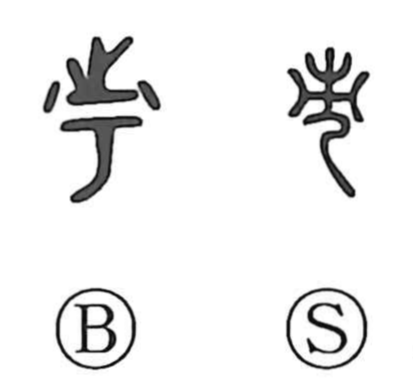

市

Kun: ichi | On: shi
market ・ city ・ fair
Explanation
市 pictures a tall marker set up to show where a market was held. The sign made the trading place recognizable, and an appointed official supervised the activity there. Some old forms add 止 above as a sound element; the received form preserves the marker alone.
From the marked place, 市 names the market and the buying and selling carried on within it. A settlement organized around such trading can then be called a town or city.
The market ground also served as a public gathering place. Song gatherings, utagaki, could take place there, bringing people together for more than commerce. The graph’s central image remains the conspicuous sign that identifies a shared, recognized place of assembly.